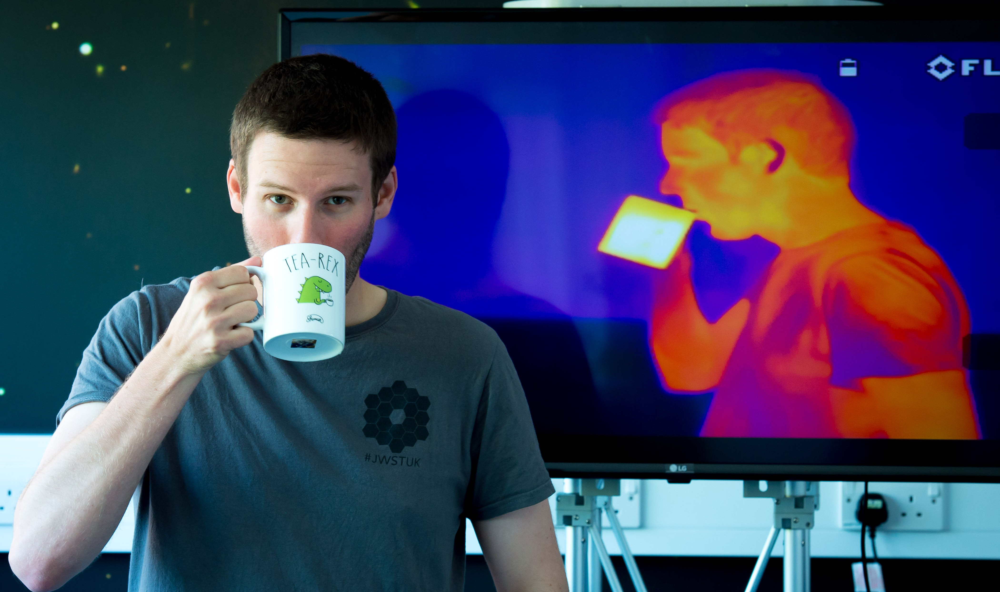

Stephen Wilkins | Astronomer
About
I am a Reader in Astronomy (equivalent to Associate Professor) in the School of Mathematical and Physical Sciences (MPS) at the University of Sussex. I am also an STFC Leadership in Public Engagement Fellow, Head of Astronomy (Director of the Astronomy Centre), and the Director of Outreach and Public Egagement (DOPE) for MPS.
In my free time I am also co-founder and chair of Curiosity Sussex a local science education charity.
Research
My research predominantly concerns understanding the process of galaxy formation and evolution especially in the early Universe. I use both observations (e.g. from Hubble, Spitzer, and ALMA) and galaxy formation simulations. I currently co-lead the First Light and Reionisation Epoch Simualtions (FLARES) project and am a member of various observational teams, most recently including The COS Legacy Archive Spectroscopic SurveY (CLASSY) and the Cosmic Evolution Early Release Science (CEERS).
I also founded and continue to direct the popular SAZERAC series of virtual conferences.
Outreach, Public Engagement, and Advocacy
Since beginning my PhD I have been active in various public engagement activities and I am currently an STFC Leadership in Public Engagement Fellow and also Director of Outreach and Public Egagement (DOPE) for the School of Mathematical and Physical Sciences.
As DOPE I oversee the Sussex Universe lecture series. As a consequence of the Covid-19 pandemic we took Sussex Universe online, offering pre-reocrded talks and live Q&A sessions via Zoom, and expanded to other subjects.
Much of my public engagement work has focussed on the upcoming joint NASA, ESA, and Canadian Space Agency Webb Telescope. In 2018 I led an exhibit at the Royal Society Summer Science Exhibition and I have given talks (mostly about Webb) to a wide variety of audiences.
I've also spent a lot of time promoting astronomy and space Science to underrepresented groups. Most recently I established the Guide Stars programme to engage members of the Guiding community with astronomy and space science.
Beyond Astronomy I helped establish two branches of the British Science Association. Under the aegis of the Lewes branch I established the Lewes STEM Fair, an annual free science fair held in Lewes. In 2019 this event attracted almost 1000 visitors. With the demise of the British Science Association branches in 2019 I helped establish Curiosity Sussex to continue organising events in Sussex. Curiosity Sussex runs Brighton WonderFest which in 2019 attracted >2000 people as well as the Lewes STEM Fair.
Teaching
In addition to supervising a team of PhD students engaged in research I also teach several undergraduate or MSc modules (of parts of modules):
- Current teaching:
- Mechanics and Relativity (0.3) [Y1]
- Introduction to Astronomy [Y1]
- Stellar and Galactic Astrophysics (0.4) [Y4]
- BSc Research Project [Y3]
- MPhys Research Project [Y4]
- Research Project [MSc Astronomy]
- Research Project [MSc Data Science]
- Previous teaching:
- Quarks to Cosmos (0.1) [Y1]
- Extragalactic Astronomy [Y3]
- Wider Topics in Data Science [MSc Data Science]